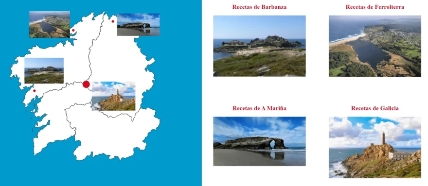

Presentación
Inicio
En la página de inicio se presenta en la parte izquierda de la pantalla un mapa de galicia con las
diferentes comarcas en las cuales hay gastronomía local. Hay muchas mas en Galicia con estas
características pero sería un trabajo a completar incluirlas todas
En la parte superior derecha se puede ver el menú de navegación y debajo la última receta añadida
Comarcas
En esta página se pueden ver las diferentes comarcas, para poder ver alguna de las recetas se debe
hacer click en la imagen representativa de cada una de las comarcas
Alternativamente podemos hacer click en el mapa para poder consultar las diferentes comarcas.
Podemos
ver una imagen que las relaciona:

Presentación
Esta misma página en la que se presentan las diferente secciones de la página.
Enlaces
Sección donde se exponen links a los diferentes recursos utilizados para la realización del sitio
web.
Detalle o receta
En esta sección se incluyen los detalles de cada uno de los platos. Puede ser una receta o una
simple
recopilación de ingredientes con algún tipo de historia
Al final de la página de detalle se puede navegar a a otras recetas relacionadas